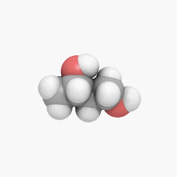
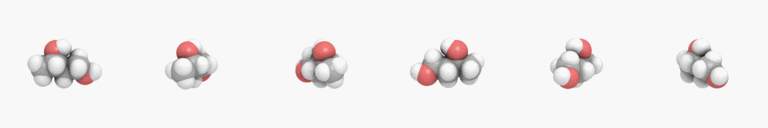

Note
The image sequence-animation.gif used in this docs has been released into the public domain by its author, C6541 at Wikipedia project. This applies worldwide. (Source)
New in version 0.3.0.
Some images may actually consist of two or more images. For example, animated image/gif images consist of multiple frames. Some image/ico images have different sizes of icons.
For example, the above image sequence-animation.gif consists of the following frames (actually it has 60 frames, but we sample only few frames to show here):
If we open this image, Image object has sequence. It’s a list-like object that maintain its all frames.
For example, len() for this returns the number of frames:
>>> from wand.image import Image
>>> with Image(filename='sequence-animation.gif') as image:
... len(image.sequence)
...
60
You can get an item by index from sequence:
>>> with Image(filename='sequence-animation.gif') as image:
... image.sequence[0]
...
<wand.sequence.SingleImage: ed84c1b (256x256)>
Or slice it:
>>> with Image(filename='sequence-animation.gif') as image:
... image.sequence[5:10]
...
[<wand.sequence.SingleImage: 0f49491 (256x256)>,
<wand.sequence.SingleImage: 8eba0a5 (256x256)>,
<wand.sequence.SingleImage: 98c10fa (256x256)>,
<wand.sequence.SingleImage: b893194 (256x256)>,
<wand.sequence.SingleImage: 181ce21 (256x256)>]
Note that each item of sequence is a SingleImage instance, not Image.
Image is a container that directly represents image files like sequence-animation.gif, and SingleImage is a single image that represents frames in animations or sizes in image/ico files.
They both inherit BaseImage, the common abstract class. They share the most of available operations and properties like resize() and size, but some are not. For example, save() and mimetype are only provided by Image. delay and index are only available for SingleImage.
In most cases, images don’t have multiple images, so it’s okay if you think that Image and SingleImage are the same, but be careful when you deal with animated image/gif files or image/ico files that contain multiple icons.
{kind=link}